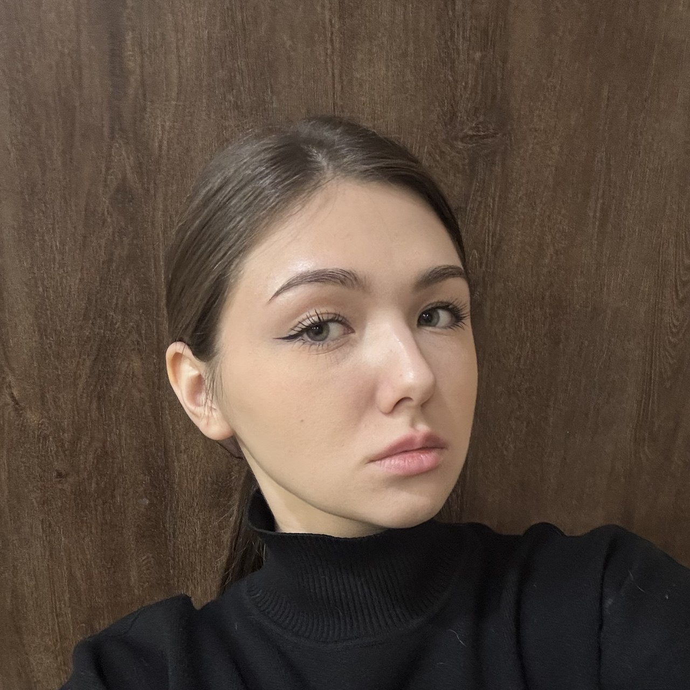

Студентка ИЦТМС 3-1, специализация - информационные технологии. на этом пока что всё.
🔹 добрый человек
🔹 не победитель дсн 2025
🔹 татастан алга
В свободное время занимаюсь фотографией и изучаю нейронные сети. Верю, что технологии должны делать мир лучше!